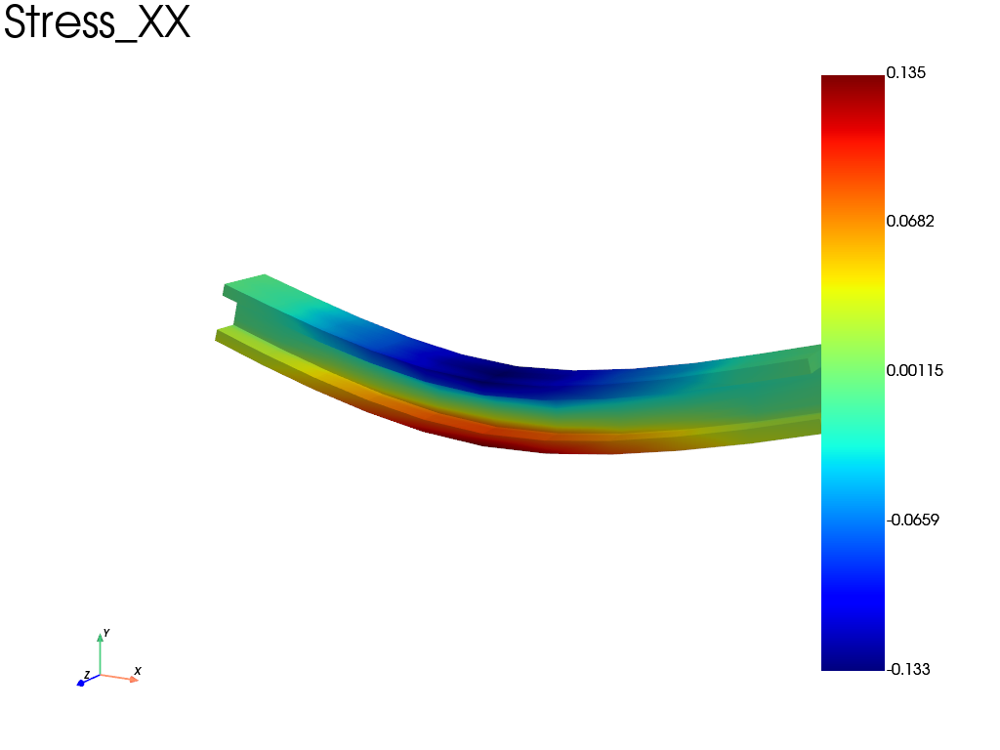

Note
Go to the end to download the full example code.
Three-point bending of an I-shaped beam
Three-point bending of a rubber beam with an I-shaped cross section, meshed by
extruding a 2D profile. The prescribed deflection is 10 % of the span, so the
problem is solved in finite strain with a compressible Neo-Hookean law
(simcoon NEOHC) whose strain energy is
with \(\mu\) the shear modulus and \(\kappa\) the bulk modulus.
import fedoo as fd
import numpy as np
Geometry and Mesh
In this example, a mesh is created with an I-shaped cross-section. First, an I-shape profile is built using linear triangle elements ‘tri3’. The ‘extrude’ function is then used to create the 3d geometry based on wedge elements ‘wed6’. Lengths are in mm, forces in N and stresses in MPa.
# Build an I-shaped beam profile (height 10, width 10, web and flanges 2 thick)
profile = fd.mesh.structured_mesh.I_shape_mesh(10, 10, 2, 2, 1, "tri3")
mesh = fd.mesh.extrude(
profile,
100, # extrusion length,
11,
) # n_nodes
mesh.nodes = mesh.nodes[
:, [2, 1, 0]
] # switch axis to put the extrusion direction along the X axis
# Uncomment the following line to use quadratic elements
# mesh = fd.mesh.functions.change_elm_type(mesh, 'wed15') #or 'wed18'
print(f"element type: '{mesh.elm_type}'")
element type: 'wed6'
Problem definition
Define a 3d nonlinear static problem with a rubber-like Neo-Hookean law: \(\mu = 1\) MPa and \(\kappa = 50\) MPa. In small strain this corresponds to \(E = 9\kappa\mu/(3\kappa+\mu) \approx 3\) MPa and \(\nu \approx 0.49\) (nearly incompressible).
Geometric nonlinearities use the updated lagrangian method
(nlgeom="UL"). Linear wedge elements lock for nearly incompressible
materials: the mean dilatation method is used to avoid it.
fd.ModelingSpace("3D")
# Material definition
mu = 1.0 # shear modulus (MPa)
kappa = 50.0 # bulk modulus (MPa)
material = fd.constitutivelaw.Simcoon("NEOHC", [mu, kappa])
wf = fd.weakform.StressEquilibrium(
material, nlgeom="UL", incompressibility="mean_dilatation"
)
# Assembly
assembly = fd.Assembly.create(wf, mesh)
# Type of problem
pb = fd.problem.NonLinear(assembly)
Boundary conditions
Create set of nodes to apply boundary conditions (ie numpy array of node indices) and apply boundary conditions on the sets:
\(u_x = u_y = u_z = 0\) on the left bottom edge,
\(u_y = 0\) on the right bottom edge,
\(u_y = -10\) on the edge at the center top.
Beam theory gives the order of magnitude of the result: \(\sigma_{xx} \approx 12 E \delta c / L^2 \approx 0.18\) MPa (6 % strain) on the outer fibers at mid-span, for a total force \(P = 48 E I \delta / L^3 \approx 1\) N. This Euler-Bernoulli estimate neglects the shear compliance, which is not small here (\(L/h = 10\), \(E/G = 3\)): it adds 12 to 20 % to the deflection, so the expected force is rather 0.85 to 0.9 N.
bottom = mesh.find_nodes("Y", mesh.bounding_box.ymin)
top = mesh.find_nodes("Y", mesh.bounding_box.ymax)
left_bottom = np.intersect1d(mesh.find_nodes("X", mesh.bounding_box.xmin), bottom)
right_bottom = np.intersect1d(mesh.find_nodes("X", mesh.bounding_box.xmax), bottom)
center_top = np.intersect1d(mesh.find_nodes("X", mesh.bounding_box.center[0]), top)
pb.bc.add("Dirichlet", left_bottom, "Disp", 0)
pb.bc.add("Dirichlet", right_bottom, "DispY", 0)
pb.bc.add("Dirichlet", center_top, "DispY", -10)
Dirichlet boundary condition:
var = 'DispY'
n_nodes = 8
value = -10
Solve and plot results
The prescribed displacement is applied in 4 increments. Then extract the stress and displacement fields and plot \(\sigma_{xx}\).
pb.set_nr_criterion("Displacement", tol=1e-3, max_subiter=10)
pb.nlsolve(dt=0.25, tmax=1, update_dt=True, print_info=1)
res = pb.get_results(assembly, ["Stress", "Disp"])
res.plot("Stress", "XX", "Node", show_edges=False)

Iter 1 - Time: 0.25000 - dt 0.25000 - NR iter: 4 - Err: 0.00009
Iter 2 - Time: 0.50000 - dt 0.25000 - NR iter: 4 - Err: 0.00008
Iter 3 - Time: 0.75000 - dt 0.25000 - NR iter: 4 - Err: 0.00008
Iter 4 - Time: 1.00000 - dt 0.25000 - NR iter: 4 - Err: 0.00010
Total running time of the script: (0 minutes 1.180 seconds)